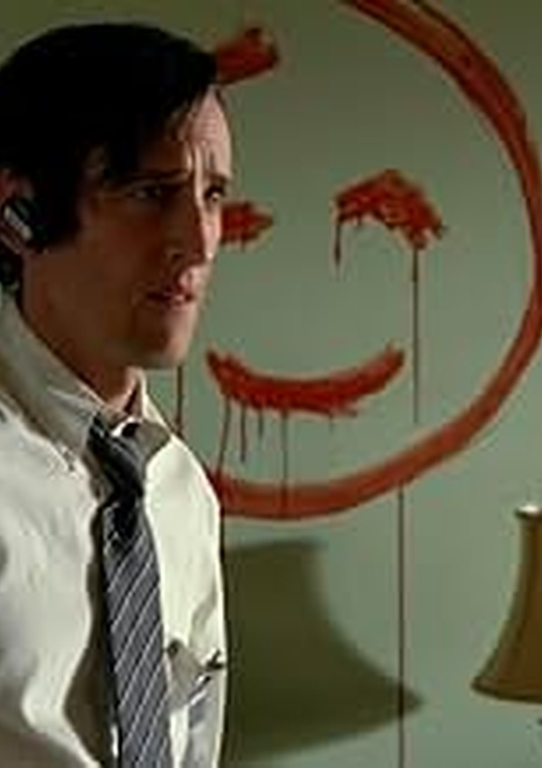
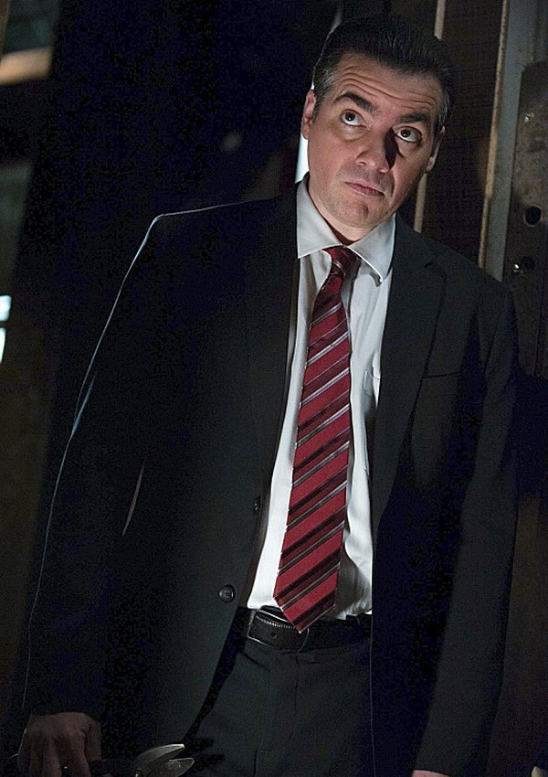
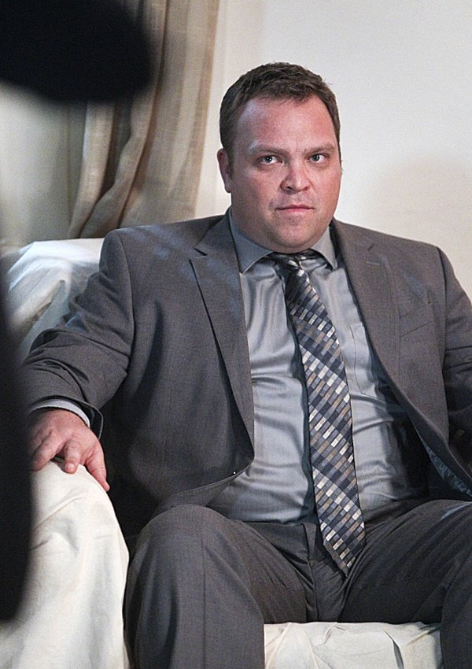
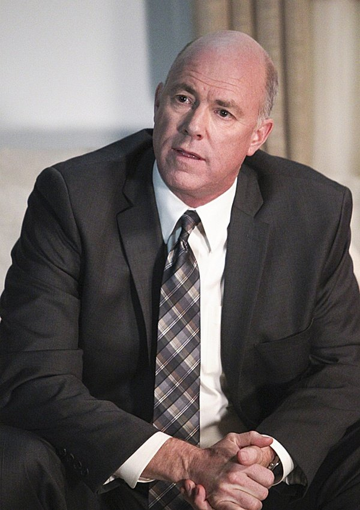
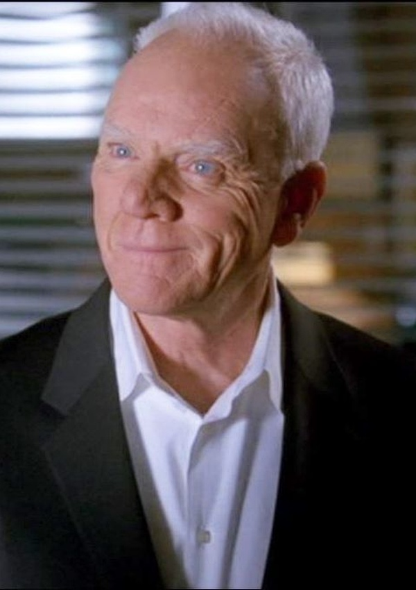
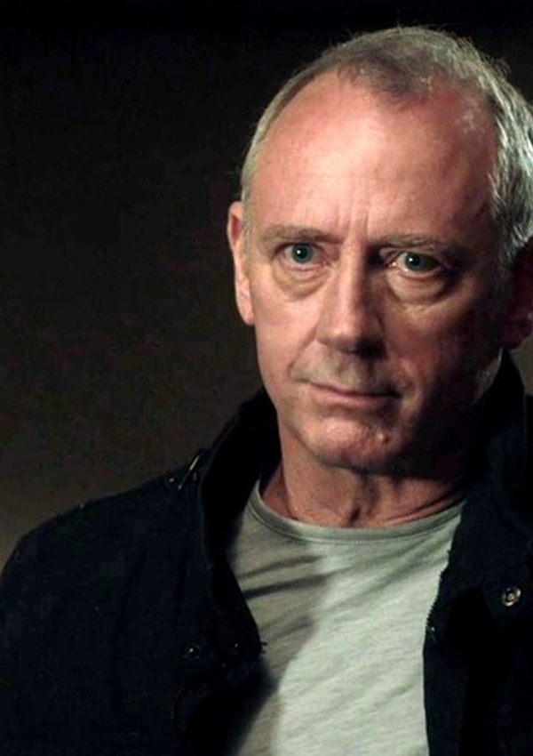

#1 FORENSE
DESCARTE FATAL

Brett Partridge
Jefe Técnico Forense del CBI
Fascinado de forma mórbida con las escenas del crimen de Red John. Muerte: En el inicio de
la temporada 6 (6x01), Red John lo emboscó y degolló en una casa abandonada; antes de expirar susurró a
Teresa Lisbon la contraseña "Tyger, Tyger".
#2 SEGURIDAD NACIONAL
VENGADOR CAÍDO

Bob Kirkland
Agente de Homeland Security
Operaba al margen de la ley buscando a Red John para vengar el asesinato de su hermano gemelo Michael.
Muerte: En 6x04, fue trasladado de prisión federal y acribillado a traición por la espalda
por el agente Reede Smith en una carretera desierta.
#3 EX-CBI
EXPLOSIÓN
Ray Haffner
Ex-Agente CBI / Detective Privado
Ex-líder de equipo y miembro devoto de la secta Visualize. Mantenía una vieja rivalidad con Jane.
Muerte: Falleció destrozado en 6x06 por la bomba colocada en la casa de Jane en Malibú
cuando este reunió a los cinco sospechosos finales.
#4 AGENTE FEDERAL
CONFESOR VIVO

Reede Smith
Agente Especial del FBI
Miembro activo de la Asociación Blake con el tatuaje de los tres puntos. Sobrevivió a la explosión de Malibú
y, al ser atacado por sus propios cómplices, se entregó al CBI confesando toda la trama a cambio de
protección judicial (único sospechoso vivo).
#5 ALTO MANDO
SEÑUELO EJECUTADO

Gale Bertram
Director de la CBI
Director cínico y socio de la conspiración utilizado como señuelo público para desviar la atención de
McAllister. Muerte: En 6x08, al reunirse con Jane en la capilla del cementerio, fue
ejecutado de un disparo por Oscar Cordero por orden de McAllister.
#6 GURÚ ESPIRITUAL
EXPLOSIÓN MALIBÚ

Brett Stiles
Líder Supremo de Visualize
Líder omnipotente de la iglesia Visualize y mentor filosófico con nexos con la primera víctima de Red John
en 1988. Muerte: Sabiendo que padecía un cáncer terminal, acudió a la reunión en la casa de
Jane en Malibú y pereció al detonar la bomba (6x06).
#7 IDENTIDAD REVELADA
EL VERDADERO ASESINO

Thomas McAllister
Sheriff del Condado de Napa
El auténtico Red John. Conoció a Patrick Jane en el episodio 1x02 y fingió su muerte en
Malibú suplantando su cadáver con ADN forense alterado. Muerte: En el episodio 6x08 ("Red
John"), tras ser herido en la capilla y perseguido hasta un parque público de Sacramento, Jane lo inmovilizó
y lo estranguló con sus propias manos hasta quitarle la vida.